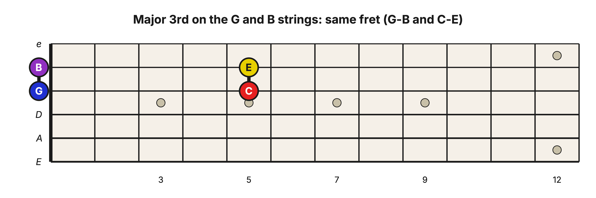
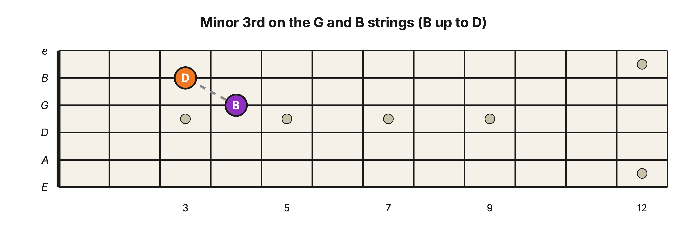
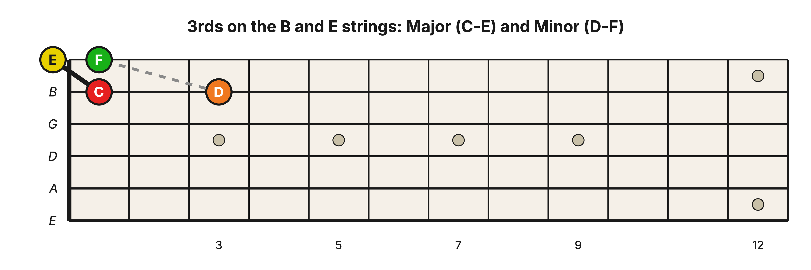
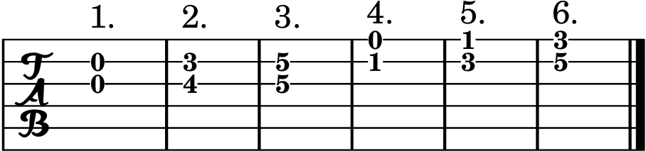
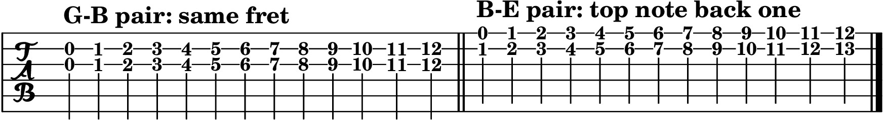
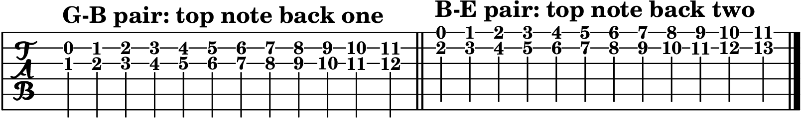
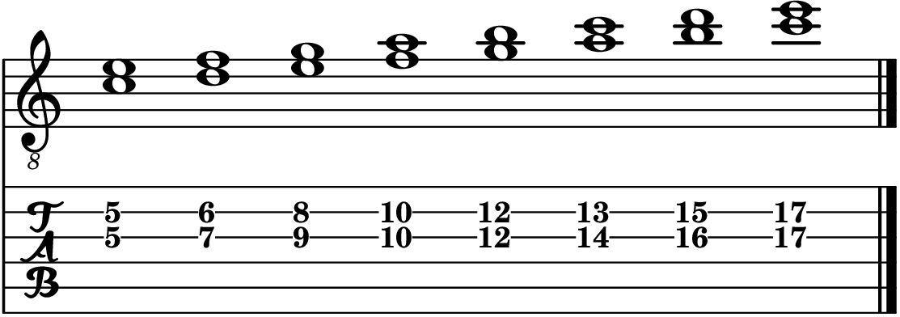

Level 2 · Chapter 14
The Fretboard: Major and Minor 3rd Shapes on the Treble Strings (G–B and B–E)
In Chapter 1 you met the Major 3rd (4 half steps) and the minor 3rd (3 half steps), and in Chapter 2 you played them on the bass strings, where every neighboring pair is tuned a Perfect 4th. The treble strings hold a twist: the G and B strings are tuned differently from all the others, and that changes the shape. Let’s see how.
One odd pair (a quick recap)
You know this from the end of “Building the Rest of the Fretboard”: four of the five neighboring string pairs are tuned a Perfect 4th apart, and the G–B pair is the lone exception, tuned a Major 3rd, one half step closer. That single oddball is the reason the B string always seems to “break the pattern,” and it is why this chapter splits the treble strings into two worlds.

It also means something delightful: the guitar has a Major 3rd built right into it, sitting between the open G and B strings.
Start on the G–B strings (the built-in 3rd)
Because the G and B strings are already a Major 3rd apart, the shapes here are the simplest on the whole neck.
Major 3rd on G–B: two notes on the same fret. Play the open G string and the open B string together. That is G up to B, a Major 3rd. Lay one finger across both strings at the 5th fret and you get C up to E, another Major 3rd. Same fret, both strings.

Minor 3rd on G–B: pull the top note back one fret. Keep the lower note on the G string and move the B-string note one fret toward the nut. For example, B on the G string (4th fret) up to D on the B string (3rd fret) is a minor 3rd, B up to D.

Now the B–E strings (and every other pair)
The B–E strings are tuned a Perfect 4th, just like the bass strings you already know from your power chords. Because the open strings start a 4th apart instead of a 3rd, the shapes shift over by a fret.
Major 3rd on B–E: the top note moves back one fret (a gentle diagonal). For example, C on the B string (1st fret) up to E on the high E string (open) is a Major 3rd.
Minor 3rd on B–E: the top note moves back two frets (a steeper diagonal). For example, D on the B string (3rd fret) up to F on the high E string (1st fret) is a minor 3rd.

Here is the big idea: those B–E shapes are the same shapes you already learned on the bass strings, because the B–E pair is tuned a Perfect 4th just like E–A, A–D, and D–G. The G–B pair is the only one that behaves differently, because it is the only one tuned a 3rd. Learn the two “worlds” (the G–B world and the 4ths world) and you can play a 3rd anywhere on the neck.
Hear it
Put the two flavors side by side on each pair:
- On the G–B strings: play B and D♯ (the 4th fret on both strings), a Major 3rd. Then pull the top note back one fret to D for the minor 3rd, B and D. Bright, then dark, one fret apart.
- On the B–E strings: play D and F♯ (3rd fret on the B string, 2nd fret on the high E string), a Major 3rd. Then pull the top note back one more fret to F for the minor 3rd, D and F.
Exercises
The goal of these is fluency: you want to find and play any 3rd, anywhere on the neck, without stopping to think. Two of them lean on the fact that a 3rd shape is movable, so you can pick one shape and slide it to play a 3rd at every fret.
Exercise 1: Spot the 3rd (all six strings)
Each item gives you two notes on a neighboring string pair. Find them, name both notes, and label the interval a Major 3rd (4 half steps) or a minor 3rd (3 half steps). Watch the G–B pair, it plays by different rules than the rest.
- G string, open + B string, open
- G string, 4th fret + B string, 3rd fret
- G string, 5th fret + B string, 5th fret
- B string, 1st fret + high E string, open
- B string, 3rd fret + high E string, 1st fret
- B string, 5th fret + high E string, 3rd fret

Answer key
- G–B, Major 3rd
- B–D, minor 3rd
- C–E, Major 3rd
- C–E, Major 3rd
- D–F, minor 3rd
- E–G, minor 3rd
Exercise 2: The Major 3rd, up the neck
This is the guitar version of running every Major 3rd as fast as you can. Because the shape is movable, you only have to learn two shapes and slide them.
On the G–B strings: make the same-fret Major 3rd shape (one finger across both strings) and slide it up one fret at a time, from the open strings to the 12th fret, playing the 3rd at every stop.
On the B–E strings (and any pair tuned a 4th): make the Major 3rd shape (top note back one fret) and do the same. You do not need to name every note. The goal is to make the shape and hear the bright Major 3rd instantly, anywhere.

To name them as you go, build a Major 3rd up from each of the seven natural notes and find it on the neck:
C–E, D–F♯, E–G♯, F–A, G–B, A–C♯, B–D♯.
Exercise 3: The Minor 3rd, up the neck
Same idea, with the minor 3rd shapes.
On the G–B strings: make the G–B minor 3rd shape (top note back one fret) and slide it up one fret at a time.
On the B–E strings (and any pair tuned a 4th): make the minor 3rd shape (top note back two frets) and slide it up fret by fret, playing the darker minor 3rd at each step.

To name them as you go, here are seven clean minor 3rds to build and find on the neck:
D–F, E–G, A–C, B–D, F♯–A, C♯–E, G♯–B.
Exercise 4: Play in 3rds (the whole C Major scale)
This one is musical, and it mixes Major and minor 3rds the way real music does. Starting from C, play a 3rd on each step of the C Major scale, all on the G–B string pair, and say whether each one is Major or minor:
C–E, D–F, E–G, F–A, G–B, A–C, B–D, C–E.

Answer key
C–E Major, D–F minor, E–G minor, F–A Major, G–B Major, A–C minor, B–D minor, C–E Major.
Notice the pattern of qualities: Major, minor, minor, Major, Major, minor, minor, Major. Every Major Scale harmonizes into 3rds in exactly that order.